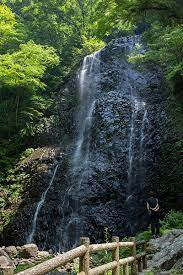
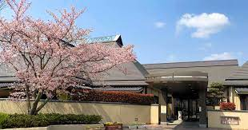
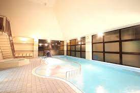

有名な(おそらく)スポットを紹介！

白猪の滝
皿ヶ嶺連峰県立自然公園の中にある高さ96mの滝。重信川の上流、表川白猪越の渓にかかり、その落下する姿はまさに自然の偉大さを感じさせます。四季それぞれに美しい景色ですが、特に冬の風景は幻想的。厳しい寒さが数日続くと、滝の水が凍りついて滝全体がまるで氷の彫刻のような姿を見せます。
引用元
白猪の滝 - 東温市公式ホームページ主コメント
いのとんの名前の由来となった白猪の滝は有名な旅スポット！山道はしんどいけど達成感は最高！冬は特に気を付けて登ってください！


さくらの湯
浸かった瞬間に「とろみ」を感じていただける泉質が自慢の温泉です。
保温保湿効果があり、女性にも人気が高く、市内外から多くの方が訪れます。
大浴場のほか、家族風呂を5室備え、家族でゆっくり過ごすことができます。
トレーニング室や温水プールについても入館料で利用できますので、健康増進のため、ご活用ください。
引用元
さくらの湯 - 東温市公式ホームページ主コメント
温泉として利用したのは４回くらいだけど祭りなどで訪れたのは２０回以上！近所に落ち着く場所もあまりないからそういった面でもいい場所でした！